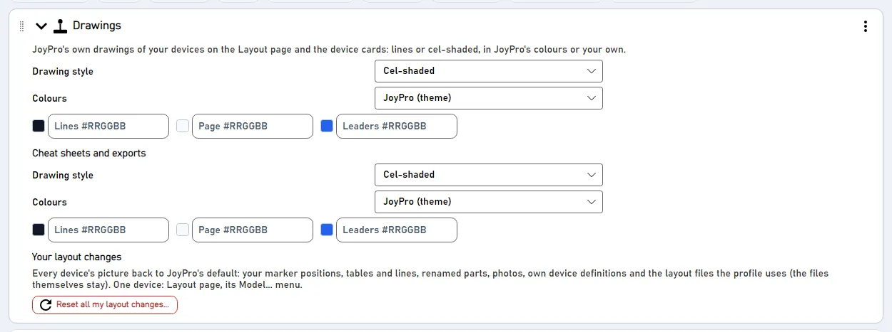
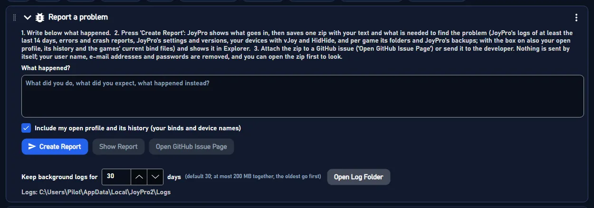

#Stránka projektu
TlačidlopopísanéTip Otvorí oficiálnu stránku vydania súčasti vo vašom prehliadači
Na karte súčasti: otvorí v prehliadači oficiálnu stránku vydania súčasti, kde ju jej vlastný projekt popisuje a ponúka na stiahnutie.
Stránka Nastavenia obsahuje každé nastavenie JoyPro v 25 častiach, ktoré sa otvárajú a zatvárajú. Pole hľadania nájde nastavenie podľa slova („oznamovacia oblasť“, „aktualizácia“, „fotky“), karty hore skočia na časť a časti si môžete zoradiť podľa seba. Každé nastavenie sa hneď uloží a prežije reštart; neexistuje tlačidlo Uložiť.


Prvé spustenie otvorí len časť Hry; všetko ostatné je na jedno kliknutie. Väčšina ľudí potrebuje len Hry, Vzhľad, Jazyk a O JoyPro a aktualizácie.
| Sekcia | Čo tam nastavíte |
|---|---|
| Hry | Ktoré hry máte, prepojené priečinky, sledovanie konfigurácií hier, zariadenie vJoy, ktoré JoyPro používa |
| Väzby | Sledovanie vstupu, zachytávanie tlačidiel, ktoré zostávajú stlačené |
| Prehliadky | Uvítanie, režim pomoci (F1) a každá prehliadka, na nové spustenie |
| Spustenie | Otvoriť posledný profil pri štarte |
| Stránky na spodnej lište | Skryť stránky, zmeniť ich poradie |
| Jazyk | Jazyk JoyPro |
| Vzhľad | Svetlé, tmavé alebo vlastné farby, veľkosť textu, mierka rozhrania, editor motívov |
| Spustiť na pozadí | Pomocník v oznamovacej oblasti, ktorý naďalej sleduje vaše hry |
| Potvrdenia | Otázky, ktoré JoyPro kladie pred zmenou |
| O JoyPro a aktualizácie | Verzia, stránka projektu, aktualizácie |
| Súkromie | Fotky výrobcov, balíky obrázkov, obaly hier |
| Štatistiky používania | Stránka Štatistiky, poradie vašich najpoužívanejších lietadiel |
| Záznam telemetrie | Zaznamenávajte svoje lety ako Tacview |
| Kresby | Ako JoyPro kreslí vaše zariadenia; obnovenie vašich zmien rozloženia |
| Nahlásiť problém | Jeden zip so všetkým, čo treba na nájdenie problému |
| Lokálna AI | Voliteľný jazykový model |
| Súčasti | vJoy, HidHide, ViGEmBus a ďalšie voliteľné programy |
| Zariadenia | Vaše zariadenia, ich názvy, nahradenie alebo odstránenie zariadenia |
| Zoznamy príkazov (DB) a cesty k hrám | Informácie pre expertov |
| DCS: predvolené väzby | Vlastné predvolené väzby DCS v inštalácii DCS |
| Zoznamy príkazov DCS, Star Citizen a IL-2 | Expertné aktualizácie zoznamov príkazov |
| Nastavenia Force Feedback hier | Vlastné možnosti Force Feedback hier |
| Force Feedback v DCS: výmena a invertovanie | Smer Force Feedback v DCS pre každé zariadenie |


Jedna karta pre každú hru, ktorú JoyPro podporuje a ktorú máte, s jej obalom, „Nainštalované“ alebo „Nenainštalované“, kde je a kde si ukladá ovládanie.
gui.vromfs.bin a lang.vromfs.bin hry len na čítanie, kvôli každej akcii lietadiel a vrtuľníkov. Vypnuté: len vlastný zoznam akcií War Thunder, ktoré JoyPro pozná.Tu sa v hre nič nemení. Prepojený priečinok určuje, kde import a export čítajú a zapisujú; skrytá hra nedostane kartu exportu a nesleduje sa.


Vaša odpoveď na otázku sprievodcu nastavením Používate sledovanie hlavy alebo VR? So sledovaním hlavy (TrackIR, webkamera so sledovaním tváre, sledovač očí Tobii) alebo VR sa rozhliadate otáčaním hlavy.
Každá prehliadka JoyPro na jednom mieste (Režim pomoci a prehliadky):


Otvoriť posledný profil pri štarte (predvolene zapnuté) otvorí profil, ktorý ste mali otvorený naposledy; cesta je zobrazená nižšie. Poznámka vysvetľuje históriu profilu: každá zmena sa uloží sama a každé uloženie je verzia v História (horná lišta). Staré verzie sa preriedia: všetky z posledného dňa, potom jedna za hodinu počas 7 dní, jedna za deň počas 60 dní, potom jedna za týždeň; najviac 200 MB na profil a 1 GB pre všetky. Verzie, ktoré si ponecháte, zostanú.


Jeden riadok pre každú stránku spodnej lišty. Zrušte začiarknutie stránky, ktorú nepoužívate; ťahaním riadka za úchyt (alebo šípkami) zmeníte poradie. Skrytá stránka sa stále otvorí z iných stránok (napríklad Otvoriť stránku Modifikátory) a kým je otvorená, zobrazuje sa na lište. Nastavenia sa skryť nedajú. Obnoviť predvolené vráti poradie JoyPro so všetkými stránkami zobrazenými.


Jazyk JoyPro: angličtina a 38 ďalších jazykov, alebo Jazyk Windows (jazyk zobrazenia Windows, alebo angličtina, keď ho JoyPro nemá). Preklady robí stroj a môžu znieť zvláštne; názvy herných príkazov zostávajú tak, ako ich volá hra. Ponuka pomocníka v oznamovacej oblasti sa riadi jazykom.


JoyPro si môže všimnúť, že ste zmenili ovládanie v hre, len kým beží. Malý pomocník sleduje ďalej ako ikona v oznamovacej oblasti aj po zatvorení JoyPro; nepoužíva badateľne CPU a len pár MB pamäte.


JoyPro sa pýta pred zmenou, ktorá sa ťažko vracia. Otázky, ktoré môžete vypnúť, sú uvedené tu: odstránenie akcie zo vzťahu, import, ktorý zahodí zmeny, ktoré ste ešte neexportovali, prvý export do hry, z ktorej profil nikdy neimportoval, export, ktorý odstraňuje väzby, a tip o sledovaní pri importe. Otázka, ktorú ste vypli cez „Nabudúce sa nepýtať“, je tu nezačiarknutá; Pýtať sa na všetko znova ich všetky znova zapne.


Verzia, zostavenie a riadok licencie, Stránka projektu a Stránka vydania, upozornenia tretích strán a aktualizácie: Skontrolovať aktualizácie, Nainštalovať aktualizáciu (stiahne novú verziu, skontroluje ju, nainštaluje a reštartuje JoyPro), Kontrolovať aktualizácie pri spustení a Ponúknuť znova pre verziu, ktorú ste preskočili. „Odkiaľ aktualizácie pochádzajú (pre expertov)“ uvádza repozitár GitHub, ktorého vydania JoyPro inštaluje.


JoyPro nemá účet ani telemetriu. Online sa pripája len kvôli kontrole aktualizácií, produktovým fotkám výrobcov (keď ste povedali áno), obalom hier, ktoré na tomto PC chýbajú, voliteľnému stiahnutiu modelu AI, voliteľným ovládačom a chýbajúcemu .NET Framework.


JoyPro si zaznamenáva, ktoré hry, lietadlá a lode používate, z vlastných logov hier a z hracieho času v Steame, a uchováva súhrn na tomto PC.


Zaznamená každé kolo, misiu alebo let so všetkou telemetriou, ktorú hra posiela (poloha, náklon, rýchlosti, ovládanie, motory, zbrane, udalosti), ako to robí Tacview pre DCS, pre každú hru, z ktorej JoyPro číta telemetriu.


Ako JoyPro kreslí vaše zariadenia na stránke Rozloženie a na kartách zariadení (čiary alebo cel-shading, farby JoyPro alebo vaše vlastné), zvlášť pre obrazovku a pre ťaháky a exporty. Obnoviť všetky moje zmeny rozloženia... vráti obrázok každého zariadenia na predvolený stav JoyPro (vaše polohy značiek, tabuľky a čiary, premenované časti, fotky, vlastné definície zariadení a súbory rozloženia, ktoré profil používa; samotné súbory zostanú); Vrátiť obnovenie hneď potom ich vráti. Len jedno zariadenie: stránka Rozloženie, jeho ponuka Model.... Ovládacie prvky kreslenia sú vysvetlené na Rozloženie.


Uchovávať denníky na pozadí n dní (predvolene 30; spolu najviac 200 MB) a Otvoriť priečinok denníkov sú nižšie.


Voliteľné. Offline pravidlá JoyPro fungujú vždy; bezplatný open-source jazykový model môže navyše čítať voľné vety v Spravovať pomocou AI, Upraviť pomocou AI, asistentovi JoyPro a Zoskupení podľa popisu, a JoyPro každú odpoveď skontroluje. Beží na tomto PC len vtedy, keď ho používate.
llama-server.exe a k súboru .gguf, Nájsť na tomto PC, Použiť tieto súbory, Prestať ich používať.


Hľadať znova ukáže kartu pre každú pripojenú páku, plyn a pedále a pre každé zariadenie, ktoré váš profil používa: jeho obrázok (kliknutím otvoríte zariadenie na stránke Rozloženie), názov, či je pripojené, a koľko má väzieb.


Odpovede len na čítanie v paneli Výstup o tom, čo JoyPro vie o každej hre: Súhrn DB, Kontrola DB, Zoznam DB, Hry v DB, Lietadlá v DB, Odtlačok DB, Cesty hier, Zoznam hier, Zistenie hier, s filtrami pre hru a lietadlo. Ak chcete po aktualizácii hry načítať jej nové príkazy, použite Aktualizovať na karte hry na stránke Úvod.


DCS dáva svoje vlastné predvolené väzby na každé zariadenie. Export JoyPro pre DCS ich už odstraňuje z každého zariadenia, do ktorého zapisuje, v každom lietadle. Dve možnosti tu menia samotnú inštaláciu DCS, pre všetky zariadenia; obe sú vypnuté, kým ich nezapnete.
<file>.nocombo.bak. Ponechať predvolené väzby vrstvy UI (ponuky, VR) nechá vrstvu UI tak, ako je.Tieto možnosti menia vlastné súbory DCS. Niektoré servery pre viacerých hráčov vás nepustia dnu, kým sú zapnuté; Obnoviť súbory DCS vráti súbory DCS späť. Aktualizácia alebo oprava DCS vráti pôvodné súbory; JoyPro možnosť pri ďalšom spustení znova zapne.


Bežne sa zoznam hry zostavuje cez Aktualizovať na jej karte na stránke Úvod. Tu: len niektoré lietadlá DCS, skúšobný beh bez zapisovania a starý režim klikania.


Každé nastavenie Force Feedback, ktoré hra ponúka (sila, efekty, pre každé zariadenie a v DCS pre každé lietadlo). JoyPro uloží hodnoty, ktoré nastavíte, do profilu a pri exporte ich zapíše do hry; nastavenia, ktoré neuložíte, zostanú tak, ako ich má hra. Vyberte Hra, Zariadenie a Lietadlá (Všetky lietadlá, alebo jedno lietadlo, ktorého hodnoty vyhrávajú), zmeňte hodnoty, potom Použiť. Vrátiť zahodí nepoužité zmeny, Zrušiť nastavenie na riadku prestane ukladať jedno nastavenie, Zrušiť výber odstráni každé zobrazené uložené nastavenie. Force Feedback z telemetrie, ktorý robí samotné JoyPro, je na stránke Force Feedback.


Ak vaša páka s Force Feedback tlačí v DCS nesprávnym smerom: začiarknite pre ňu Vymeniť os, Invertovať X alebo Invertovať Y, potom Použiť. Zrušiť výber vráti zariadeniu predvolené nastavenia DCS. Tabuľka zariadení s filtrami (Iba pripojené, Iba profil), tlačidlami výberu a Použiť vybrané / Vymazať vybrané / Vymazať všetko; „Ručne pre jedno zariadenie (pokročilé)“ nastaví jedno zariadenie podľa názvu.
DCS číta smer Force Feedback pre každé zariadenie pri štarte: vymenené alebo invertované zariadenie tlačí opačne v každom lietadle.
%APPDATA%\JoyPro2\ui-settings.json (okno, stránky, otvorené sekcie a ich poradie, téma, jazyk, potvrdenia, odpovede o súkromí, oznamovacia oblasť, voľby lokálnej AI ...), zapisované hneď pri každej zmene; témy ako súbory JSON vedľa neho. View model: MainWindowViewModel.SettingsPage.cs (sekcie, hľadanie, poradie; SettingsSectionDefaults obsahuje ID, názvy a kľúčové slová na hľadanie), ovládacie prvky Views/Controls/SettingsSection.cs, SettingsSectionsPanel.cs, SettingsTabStrip.cs.engine games installs, engine games install set, engine games install disable, engine games config set (MainWindowViewModel.GameInstalls.cs, GameSetup.cs).MainWindowViewModel.NavPages.cs; vzhľad: MainWindowViewModel.Appearance.cs, Services/ThemeService.cs; jazyk: MainWindowViewModel.Language.cs (Lokalizácia).MainWindowViewModel.Updates.cs (Aktualizácie); hlásenie: MainWindowViewModel.AppServices.cs, engine support bundle (Protokolovanie).engine usage harvest, engine usage ranking, engine usage pin (Štatistiky používania); záznam telemetrie: MainWindowViewModel.TelemetryRecording.cs, engine telemetry sessions, engine telemetry export (Záznam telemetrie).engine llm status, engine llm download, engine llm use-local, engine llm start (Zoskupovanie pomocou bežného jazyka); súčasti: MainWindowViewModel.Components.cs (Súčasti).engine devices list, engine devices inputs, engine devices exchange, engine devices remove, engine games devices (Zariadenia).engine dcs strip-defaults, engine dcs device-luas, engine dcs defaults restore (MainWindowViewModel.DcsDefaults.cs); zoznamy príkazov: engine dcs refresh id, engine dcs refresh clean, engine db refresh-starcitizen, engine db refresh-il2; expertné odpovede o DB: engine db summary, engine db check, engine db list, engine db games, engine db planes, engine db fingerprint, engine games paths, engine games list, engine games detect.engine ffb models, engine ffb show, engine ffb set, engine ffb clear (uložené v profile, zapísané pri exporte; MainWindowViewModel.FfbSettings.cs); výmena/invertovanie v DCS: engine dcs ffb list, engine dcs ffb set, engine dcs ffb clear.Dokumentácia funkcií za touto stránkou, generovaná z repozitára:
190 ovládacích prvkov, načítaných zo zdrojového kódu programu: 190 popísaných, 0 s faktami zo zdrojového kódu (tip, komentár v kóde, volanie nástroja), 0 ešte treba rozšíriť.
Tip Otvorí oficiálnu stránku vydania súčasti vo vašom prehliadači
Na karte súčasti: otvorí v prehliadači oficiálnu stránku vydania súčasti, kde ju jej vlastný projekt popisuje a ponúka na stiahnutie.
Tip Oprava alebo odinštalovanie: otvorí zoznam nainštalovaných aplikácií Windows, kde je vlastný odinštalátor súčasti
Na karte nainštalovanej súčasti: otvorí zoznam Nainštalované aplikácie vo Windows.
Tam súčasť opravte alebo odinštalujte jej vlastným odinštalátorom; JoyPro súčasti sám neodstraňuje.
Na karte súčasti: otvorí v prehliadači licenciu súčasti na jej oficiálnej stránke projektu.
Začiarknite pre áno. Potom môže JoyPro nainštalovať pomocníka.
Začiarknite pre áno: JoyPro môže stiahnuť a nainštalovať tohto bezplatného pomocníka.
Inštalovať funguje len vtedy, keď je toto začiarknuté.
Stiahne a nainštaluje tohto bezplatného pomocníka. Najprv začiarknuť políčko.
Stiahne a nainštaluje tohto bezplatného pomocníka: Inštalovať s názvom súčasti.
Funguje len po začiarknutí „Prečítal som si ...“, takže najprv začiarknite toto políčko.
Zobrazuje sa počas sťahovania súčasti: zastaví sťahovanie.
Inštalátor, ktorý už beží, JoyPro nezastaví; použite Zrušiť v jeho vlastnom okne.
Tip Zapnuté: x pri akcii sa najprv opýta 'Odstrániť túto akciu?'. Vypnuté: odstráni sa hneď (Ctrl+Z to vráti).
Zapnuté: x pri akcii na stránke Vzťahy sa najprv opýta „Odstrániť túto akciu?“.
Vypnuté: akcia sa odstráni hneď; Ctrl+Z ju stále vráti.
Tip Zapnuté: Importovať na karte hry sa najprv opýta, keď má profil pre túto hru zmeny, ktoré ešte nie sú v hre (Najprv exportovať, Importovať, Zrušiť). Vypnuté: importuje hneď (História zmeny vráti).
Zapnuté: Importovať na karte hry sa najprv opýta, keď má váš profil pre túto hru zmeny, ktoré ešte nie sú v hre, s možnosťami Najprv exportovať, Importovať a Zrušiť.
Vypnuté: importuje hneď; História profilu stále obsahuje predchádzajúcu verziu.
Zapnuté: prvý export hry, z ktorej tento profil nikdy neimportoval, sa opýta „Najprv importovať?“, aby sa vlastné väzby hry nečakane nestratili.
Vypnuté: exportuje hneď.
Zapnuté: export, ktorý odstraňuje väzby, sa pred zápisom raz opýta.
Vypnuté: zapíše hneď.
Zapnuté: import zobrazí tip, že JoyPro môže v hre sledovať zmeny ovládania, ktoré v nej urobíte.
Vypnuté: tip je skrytý.
Tip Každá vypnutá otázka sa opäť bude klásť
Znova začiarkne všetky otázky tejto časti, takže sa JoyPro odteraz znova pýta na každú.
Aktívne len vtedy, keď je aspoň jedna otázka vypnutá.
Tip Zapne lokálnu AI s nastaveným modelom; načíta sa s ďalšou požiadavkou
Na štítku „Lokálna AI“ vedľa akcií AI, zobrazenom, keď je model nastavený, ale vypnutý: jedným kliknutím zapne lokálnu AI s týmto modelom; načíta sa pri vašej ďalšej požiadavke.
Bez modelu namiesto toho otvorí Nastavenia > Lokálna AI.
Tip Otvorí Nastavenia > Lokálna AI: stiahnuť model (najprv veľkosť a licencia) alebo použiť vlastný llama.cpp
Nastaviť lokálnu AI na štítku „Lokálna AI“: otvorí Nastavenia > Lokálna AI a posunie sa k nej, kde stiahnete model alebo nasmerujete JoyPro na váš vlastný llama.cpp.
Samo nič nezmení.
Tip Okamžite ukončí lokálny model AI a uvoľní jeho pamäť (ďalšia požiadavka ho znova načíta)
Zastaviť teraz, zobrazené, kým je lokálny model AI načítaný: model hneď ukončí a uvoľní jeho pamäť.
Lokálna AI zostane zapnutá; ďalšia požiadavka na AI model znova načíta.
Tip Zapnuté: keď beží hra uvedená nižšie a posiela telemetriu, JoyPro zapisuje jeden súbor na kolo, misiu alebo let. Vypnuté: nič sa nezaznamenáva ani nezisťuje.
Predvolene vypnuté. Zapnuté: kým začiarknutá hra beží a posiela telemetriu, JoyPro zapisuje jeden záznam za každé kolo, misiu alebo let do priečinka nižšie.
Vypnuté: nič sa nezaznamenáva a JoyPro nehľadá bežiace hry.
Tip Kam sa záznamy ukladajú, na ľubovoľnom disku (disk s voľným miestom: hodina zaberie asi 10 až 50 MB)
Priečinok > Vybrať...: vyberie, kam pôjdu nové záznamy, na ľubovoľnom disku.
Zoznam Zaznamenané relácie potom ukazuje záznamy z tohto priečinka; existujúce záznamy sa nepresúvajú.
Tip Späť do dátového priečinka JoyPro
Zobrazuje sa, keď ste zvolili vlastný priečinok: nové záznamy pôjdu znova do dátového priečinka JoyPro a zoznam ukáže záznamy v ňom.
Záznamy vo vašom priečinku zostanú tam, kde sú.
Otvorí priečinok záznamov v Prieskumníkovi.
Tip Vlastné pakety, odpovede a súbory hry popri hodnotách, pre nástroje, ktoré ich čítajú. Asi dvojnásobná veľkosť.
Predvolene zapnuté: každý záznam uchováva popri hodnotách aj vlastné pakety, odpovede a súbory hry pre nástroje, ktoré ich čítajú.
Záznam je potom asi dvakrát väčší.
Jedna hra záznamu telemetrie: začiarknuté hry sa zaznamenávajú, kým bežia a posielajú telemetriu.
Riadok nižšie hovorí, čo JoyPro pri tejto hre počúva.
Znova načíta zoznam zaznamenaných relácií z priečinka záznamov.
Tip Súbor .zip.acmi, ktorý otvorí Tacview: trasa, sklon, rýchlosti a ďalšie objekty, ktoré hra hlásila. Len pre hry, ktorých telemetria obsahuje polohu.
Zapíše vybraný záznam ako súbor .zip.acmi, ktorý otvorí Tacview, do priečinka Exports vedľa záznamov a ukáže ho v Prieskumníkovi.
Len pre hry, ktorých telemetria obsahuje polohu.
Tip Priečinok s jednou tabuľkou všetkých hodnôt pre každý okamih, udalosťami, zoznamom kanálov a jedným malým súborom na kanál (oddelené čiarkami, desatinná bodka).
Zapíše vybraný záznam ako priečinok súborov CSV do priečinka Exports vedľa záznamov: jedna tabuľka všetkých hodnôt pre každý okamih, udalosti, zoznam kanálov a jeden malý súbor pre každý kanál.
Prieskumník otvorí priečinok.
Odstráni vybraný záznam.
x v poli Hľadať v nastaveniach: vymaže hľadanie, takže sa znova zobrazia všetky časti.
Otvorí všetky časti stránky Nastavenia.
Ktoré časti sú otvorené, sa zapamätá do ďalšieho spustenia.
Zavrie všetky časti, takže stránka ukazuje len ich názvy; potrebnú časť otvoríte kliknutím.
Malá šípka vedľa Otvoriť všetko / Zavrieť všetko: vráti časti do poradia JoyPro, pričom otvorená zostane len časť Hry.
Nové poradie sa zachová aj pri ďalšom spustení.
Tip Svetlé farby
Hneď zobrazí JoyPro v jeho svetlých farbách.
Zachová sa pre ďalšie spustenie.
Tip Tmavé farby
Hneď zobrazí JoyPro v jeho tmavých farbách.
Zachová sa pre ďalšie spustenie.
Tip Riadiť sa nastavením Windows
JoyPro sa riadi nastavením Windows pre aplikácie.
Zachová sa pre ďalšie spustenie.
Tip Zobraziť JoyPro v tomto motíve
Použiť pri jednom z vašich vlastných motívov: hneď zobrazí JoyPro v tomto motíve.
Zachová sa pre ďalšie spustenie.
Tip Otvoriť ho v editore motívov nižšie
Upraviť pri jednom z vašich vlastných motívov: otvorí jeho kópiu v editore motívov nižšie.
Kým nestlačíte Uložiť alebo Použiť tento motív, nič sa nezmení.
Tip Veľkosť textu motívu alebo 100 %
Obnoviť pôvodné vedľa Veľkosť textu: zahodí veľkosť textu, ktorú ste zvolili, takže znova platí veľkosť textu používaného motívu, alebo 100 %, ak ju motív nemá.
Tip Späť na 100 %
Obnoviť pôvodné vedľa Mierka rozhrania: celé okno sa vráti na 100 %.
Editor motívov: začne nový motív zo svetlých farieb JoyPro a otvorí ho v editore so živým náhľadom.
Ako súbor sa uloží len pomocou Uložiť alebo Použiť tento motív.
Editor motívov: začne nový motív z tmavých farieb JoyPro a otvorí ho v editore.
Tip Súbor motívu (.json), ktorý s vami niekto zdieľal
Editor motívov: vyberie súbor motívu, ktorý s vami niekto zdieľal.
JoyPro ho skontroluje, skopíruje do svojho priečinka motívov a otvorí v editore; riadok nad editorom povie, čo sa importovalo, alebo prečo nie.
Časť živého náhľadu editora motívov: vzorové tlačidlo, ktoré ukazuje, ako vyzerajú tlačidlá v upravovanom motíve.
Nič nerobí.
Časť živého náhľadu editora motívov: vzorové zvýraznené tlačidlo.
Nič nerobí.
Časť živého náhľadu editora motívov: vzorové neaktívne tlačidlo.
Nič nerobí.
Časť živého náhľadu editora motívov: vzorové tlačidlo stránky v dolnej lište.
Nič nerobí.
Časť živého náhľadu editora motívov: vzorové tlačidlo stránky zobrazené ako vybrané.
Nič nerobí.
Časť živého náhľadu editora motívov: vzorové tlačidlo stránky v dolnej lište.
Nič nerobí.
Tip Zosvetlí alebo stmaví farby textu, kým nie sú všetky texty čitateľné
Zobrazuje sa, keď kontrola kontrastu nájde ťažko čitateľné texty: zosvetlí alebo stmaví farby textu upravovaného motívu, kým nie je každý text čitateľný, a povie, koľko farieb sa zmenilo.
Uloží sa len pomocou Uložiť alebo Použiť tento motív.
Tip Uloží ho a zobrazí v ňom JoyPro
Uloží upravovaný motív a hneď v ňom zobrazí JoyPro.
Zachová sa pre ďalšie spustenie.
Uloží upravovaný motív ako súbor do priečinka nastavení JoyPro.
Ak je to používaný motív, okno zmenu ukáže hneď.
Vytvorí kópiu upravovaného motívu a otvorí ju v editore, pre variant motívu, ktorý sa vám páči.
Tip Uložiť motív ako súbor na zdieľanie
Uloží upravovaný motív ako súbor .json tam, kam zvolíte, aby ste si ponechali kópiu alebo ho zdieľali; ostatní ho načítajú pomocou Importovať....
Tip Všetky farby späť podľa motívu, z ktorého vychádza, a písma späť na písma JoyPro
Vráti každú farbu upravovaného motívu na motív, z ktorého vychádza; aj písma sa vrátia na písma JoyPro.
Názov zostane a súbor motívu sa zmení len pomocou Uložiť alebo Použiť tento motív.
Odstráni súbor upravovaného motívu. Ak to bol používaný motív, JoyPro sa vráti k vstavanému motívu.
Tip Nastavenie pri prvom spustení: ktoré hry máte, prepojené priečinky (prenosné inštalácie) a umiestnenia konfigurácie
Znova vyhľadá vaše hry a otvorí okno prvého spustenia: začiarknite hry, ktoré máte, prepojte priečinky prenosných inštalácií a nastavte ďalšie umiestnenia konfigurácie.
Kým tam nestlačíte Hotovo, nič sa nezmení.
Znova vyhľadá vaše hry, napríklad po inštalácii alebo presunutí hry, a aktualizuje karty tu, stránku Úvod a stránku Export.
Tip Keď v hre zmeníte ovládanie, ktoré JoyPro spravuje, JoyPro sa po zatvorení hry opýta, či ich má prevziať do vášho profilu
Predvolene zapnuté: keď v hre zmeníte ovládanie, ktoré spravuje JoyPro, JoyPro si to po zatvorení hry všimne a opýta sa, či má zmeny prevziať do vášho profilu.
Sledujú sa hry, do ktorých ste exportovali alebo z ktorých ste importovali a ktoré sú na stránke Úvod začiarknuté na sledovanie.
Tip Zapnuté (predvolene): JoyPro rozbalí gui.vromfs.bin a lang.vromfs.bin (iba na čítanie) pre každú akciu lietadla a vrtuľníka. Vypnuté: JoyPro používa iba vlastný zoznam známych akcií War Thunder.
Predvolene zapnuté: keď JoyPro zostavuje zoznam príkazov War Thunder, rozbalí súbory hry gui.vromfs.bin a lang.vromfs.bin pre všetky akcie lietadiel a vrtuľníkov.
Vypnuté: JoyPro použije len vlastný zoznam akcií War Thunder, ktoré pozná.
Tip Súbory HLL Vietnam sú komprimované pomocou Oodle a hra nedodáva vlastnú knižnicu Oodle. S vaším áno JoyPro použije tú, ktorú dodáva iná hra na tomto PC (z miesta, kde je, nikdy sa nekopíruje). Vypnuté: vlastný zoznam kláves gamepadu od JoyPro, čo je všetko, čo režim gamepadu Xbox potrebuje.
Vaša odpoveď na otázku, ktorú JoyPro kladie pri zostavovaní zoznamu príkazov Hell Let Loose: Vietnam: ak je začiarknuté, JoyPro číta komprimované súbory hry pomocou knižnice Oodle, ktorú dodáva iná nainštalovaná hra, priamo z jej miesta.
Nezačiarknuté: vlastný zoznam tlačidiel gamepadu od JoyPro, čo je všetko, čo režim Gamepad Xbox potrebuje.
Zabudne vašu odpoveď o súboroch hry Hell Let Loose: Vietnam; JoyPro sa opýta znova, keď bude nabudúce zostavovať zoznam príkazov tejto hry.
Tip Tento priečinok potom platí ako inštalácia hry (priečinok hry, priečinok jej spúšťača alebo priečinok bin)
Vybrať priečinok... na karte hry: prepojí priečinok hry.
Funguje aj priečinok spúšťača alebo bin; JoyPro k nemu prepojí priečinok hry.
Tip Vyberte .exe hry alebo jej spúšťača; JoyPro prepojí priečinok hry
Vybrať .exe... na karte hry: vyberte program hry alebo jej spúšťač; JoyPro k nemu prepojí priečinok hry, ako Vybrať priečinok....
Tip Zabudnúť váš priečinok a zistiť hru znova
Použiť zistené na karte hry s vlastným priečinkom: zabudne odkaz, takže JoyPro hru znova zistí sám.
Súborov hry sa to nedotkne.
Tip Nemáte ju alebo vás nezaujíma: skrytá všade v JoyPro (karty, export, sledovanie, zoznamy hier); počíta sa ako nenainštalovaná. Vaše väzby pre ňu zostávajú.
Skryť na karte hry: pre hru, ktorú nemáte alebo o ktorú nemáte záujem.
Hra sa skryje všade v JoyPro a považuje sa za nenainštalovanú; vaše väzby pre ňu zostanú v profile.
Tip Stlačte tlačidlo (alebo posuňte os o veľký kus) a stránka Väzby alebo Vzťahy preskočí na jeho vzťah; ďalším stlačením prejdete na ďalší vzťah na ňom, najprv tie bez modifikátorov. Nie počas zachytávania alebo písania do poľa.
Predvolene zapnuté: stlačte tlačidlo a stránka Väzby alebo Vzťahy skočí na jeho vzťah; stlačte ho znova pre ďalší vzťah na ňom, najprv tie bez modifikátorov.
Nie počas zachytávania alebo písania do poľa a len vtedy, keď je okno JoyPro vpredu.
Tip Krátka poznámka dole v zozname (BTN 8 on WarBRD: Gear) po preskoku sledovania vstupu. Zoznam preskakuje, aj keď je to vypnuté.
Predvolene vypnuté: po skoku sledovania vstupu krátka poznámka dole v zozname povie, čo bolo stlačené.
Zoznam skáče s ňou aj bez nej.
Tip Zachytávanie prevezme len tlačidlo, ktoré zmení stav; tlačidlo už stlačené pri začiatku zachytávania (stred 3-polohového prepínača, prepínač režimu) sa nikdy nepočíta. Zaškrtnuté: uvoľnenie sa počíta ako toto tlačidlo.
Predvolene vypnuté: zachytávanie berie len tlačidlo, ktoré zmení stav, takže tlačidlo stlačené už pri začiatku zachytávania sa nikdy nepočíta.
Začiarknuté: pustenie takého tlačidla sa počíta ako toto tlačidlo.
Tip Zapnuté: pod zhodami názvu nasleduje Rovnaká funkcia (rovnaká funkcia, nájdená podľa synonyma alebo popisu) a Súvisiace (zbalené). Vypnuté: len akcie, ktorých názov obsahuje každé zadané slovo. Rovnaký prepínač je vedľa Všetko / Osi / Tlačidlá.
Nastavenia > Vzťahy, predvolene zapnuté: hľadanie Pridať akcie vypíše pod akciami, ktorých názov obsahuje každé zadané slovo, aj akcie, ktoré robia to, čo znamenajú vaše slová, a tie voľnejšie.
Vypnuté: len tieto zhody podľa názvu.
Zvoľte túto možnosť, ak sa rozhliadate pohybom hlavy.
Zvoľte túto možnosť, ak sa rozhliadate pomocou sledovania hlavy, sledovača očí Tobii alebo VR, alebo ak si niektoré z nich plánujete zaobstarať.
Každé neskoršie nastavenie potom v leteckých simulátoroch nedá na váš HOTAS žiadne tlačidlá pohľadu ani rozhliadania, iba tlačidlo na vycentrovanie pohľadu, aby vaše tlačidlá zostali voľné pre iné funkcie.
Zvoľte túto možnosť, ak sa rozhliadate hatom na páke.
Zvoľte túto možnosť, ak sa rozhliadate pákou alebo plynom.
Každé neskoršie nastavenie dá rozhliadanie na hat alebo páčku palca s vysokou prioritou: hneď po kanóne, odhodení výzbroje, protiopatreniach, brzdách, trime a cieli.
Tip Otvorí sprievodcu nastavením pre tieto simulátory
Nastaví vaše simulátory znova podľa novej odpovede.
Zobrazí sa po zmene odpovede: otvorí sprievodcu nastavením pre nainštalované simulátory, ktorých sa odpoveď týka, aby sa tam rozhliadanie nastavilo znova.
Váš profil sa zmení až po použití nového plánu.
Zobrazí alebo skryje túto stránku v dolnej lište.
Skrytá stránka sa stále otvorí z iných stránok a je viditeľná, kým je otvorená.
Posunie túto stránku v zozname o jedno miesto vyššie, čo je o jedno miesto doľava v dolnej lište.
Poradie sa zachová aj pri ďalšom spustení.
Posunie túto stránku v zozname o jedno miesto nižšie, čo je o jedno miesto doprava v dolnej lište.
Tip Poradie stránok podľa JoyPro, všetky stránky zobrazené
Vráti stránky v dolnej lište do poradia JoyPro a znova zobrazí každú stránku.
Tip Otázka prvého spustenia: čo chcete robiť a ktorá prehliadka sa hodí
Znova zobrazí uvítanie so všetkými prehliadkami.
Zobraziť uvítanie znova otvorí otázku prvého spustenia: čo chcete urobiť?
Vyberte odpoveď a JoyPro spustí prehliadku alebo rýchle nastavenie, ktoré vám vyhovuje.
Tip Kliknite na čokoľvek a uvidíte, čo to robí; F1 alebo Esc ho ukončí
Kliknúť sem a potom na ľubovoľné tlačidlo: zobrazí sa, čo robí.
Režim pomoci zapne režim pomoci: kliknutie na ľubovoľné tlačidlo, pole, riadok zoznamu alebo kartu ho už nespustí, ale ukáže, čo robí.
F1, Esc alebo Ukončiť režim pomoci hore ho ukončí.
Tip Uvítanie sa znova zobrazí pri ďalšom spustení a žiadna prehliadka sa nepočíta ako videná
Uvítanie sa vráti pri ďalšom spustení.
Opýtať sa znova pri ďalšom spustení zariadi, že sa uvítanie znova zobrazí pri ďalšom spustení JoyPro.
Každá prehliadka sa znova považuje za nevidenú; váš profil a vaše ostatné nastavenia zostanú tak, ako sú.
Tip Veľké písmo a veľmi krátke vety v prehliadkach a pomoci. Vhodné pre deti a pre každého, kto to chce jednoducho.
Veľké písmo a krátke vety v prehliadkach a pomoci.
Jednoduché slová: veľké karty a najkratšie texty v prehliadkach a pomoc F1 začína jednou jednoduchou vetou, podrobnosti sú pod Viac podrobností.
Ukladá sa hneď; zostane aj po reštarte.
Tip Prehliadky nižšie ukazujú iba kroky, ktoré potrebujete
Iba to podstatné: prehliadka spustená zo zoznamu nižšie ukáže len kroky, ktoré potrebujete.
Doplnky, ako režim zarážky v prehliadke DCS, sa vynechajú.
Tip Prehliadky nižšie ukazujú každý krok, aj tie navyše
Všetky funkcie: prehliadka spustená zo zoznamu nižšie ukáže každý krok aj s doplnkami.
Vaša voľba zostane aj po reštarte.
Tip Spustí túto prehliadku
Spustí túto prehliadku.
Spustiť prehliadku spustí túto prehliadku: stmaví okno, rozžiari tlačidlo, o ktorom hovorí, a počká na vaše kliknutie.
Rýchla prehliadka ukazuje, kde neskôr zmeniť tlačidlo; samotné rýchle nastavenie je Nastaviť všetko za mňa na stránke Úvod.
Tip JoyPro otvorí profil, ktorý ste mali otvorený naposledy, hneď po zobrazení okna. Zrušením začiarknutia sa spustí bez otvoreného profilu.
Predvolene zapnuté: JoyPro otvorí profil, ktorý ste mali otvorený naposledy, hneď po zobrazení svojho okna; jeho cesta je uvedená nižšie.
Nezačiarknuté: JoyPro sa spustí bez otvoreného profilu.
Tip Pomocník v oznamovacej oblasti sa spustí sám pri prihlásení do Windows; okno JoyPro sa neotvorí. Nie sú potrebné oprávnenia správcu; zrušením začiarknutia ho opäť odstránite zo spustenia Windows.
Predvolene vypnuté. Zapnuté: malý pomocník v oznamovacej oblasti sa spustí sám, keď sa prihlásite do Windows, a sleduje vaše hry; okno JoyPro sa neotvorí.
Jeho začiarknutím sa začiarkne aj Zavrieť do oznamovacej oblasti.
Tip Zatvorenie JoyPro (X) ponechá pomocníka v oznamovacej oblasti, aby ďalej sledoval vaše hry. Zrušením začiarknutia zatvorenie JoyPro ukončí aj sledovanie.
Po zatvorení JoyPro prevezme sledovanie hier pomocník v oznamovacej oblasti, ktorý tam zostane a zaberie len niekoľko MB pamäte.
Začiarknutím sa pomocník hneď spustí.
Tip JoyPro na GitHube: zdrojový kód, vydania, hlásenia problémov
Otvorí v prehliadači stránku projektu JoyPro na GitHub: zdrojový kód, vydania a hlásenia problémov.
Tip Každé vydanie s prehľadom zmien
Otvorí v prehliadači vydania JoyPro na GitHub: každé vydanie so zoznamom zmien.
Tip Opýta sa GitHubu na najnovšie vydanie JoyPro; novšie sa ponúkne s prehľadom zmien
Opýta sa GitHub na najnovšie vydanie JoyPro a vždy povie, čo našiel: novšia verzia sa ponúkne so zoznamom zmien, inak „JoyPro2 je aktuálny“.
Verzia, ktorú ste preskočili, sa tu ponúkne tiež.
Tip Stiahne novú verziu, skontroluje ju, nainštaluje a znova spustí JoyPro
Keď kontrola našla novšiu verziu: stiahne ju, skontroluje stiahnutý súbor, zavrie JoyPro, nainštaluje novú verziu a znova spustí JoyPro; priebeh sa ukazuje v okne aktualizácie.
Vaše profily a nastavenia zostanú.
Tip Pri každom spustení sa JoyPro raz opýta GitHubu, či existuje novšia verzia, a pred aktualizáciou sa opýta vás
Predvolene zapnuté: pri každom spustení sa JoyPro raz opýta GitHub, či existuje novšia verzia, a ponuku ukáže len vtedy, keď existuje.
Nikdy neaktualizuje bez vášho kliknutia.
V ponuke aktualizácie ste zvolili „Preskočiť túto verziu“: toto to zabudne, takže ďalšia kontrola verziu znova ponúkne.
Tip Zabudnúť odpoveď áno / nie, ktorú ste dali pre jednotlivé zariadenia; JoyPro sa opýta znova, než zobrazí fotografiu výrobcu
Zabudne odpoveď áno alebo nie, ktorú ste dali pre jednotlivé zariadenia k fotografii produktu od výrobcu, takže sa JoyPro pred stiahnutím fotografie znova opýta.
Riadok vedľa neho počíta vaše odpovede.
Tip Keď sa objaví zariadenie, ktorého referenčné fotografie nie sú v tomto počítači, JoyPro ich na pozadí stiahne z pôvodnej adresy (alebo z webového archívu, keď už neexistuje), každú skontroluje a uloží do vášho priečinka s údajmi. Vypnuté: JoyPro ich ponúkne a čaká na vaše kliknutie.
Zapnuté: keď sa objaví zariadenie, ktorého referenčné fotografie nie sú v tomto počítači, JoyPro ich na pozadí stiahne z pôvodnej adresy, každú skontroluje a uloží ju do vášho dátového priečinka.
Vypnuté: JoyPro ich ponúkne a počká na vaše kliknutie.
Tip Obálky hier, pre ktoré Steam nemá na tomto PC obrázok, sa raz stiahnu z obchodu Steam alebo z webu vydavateľa (mediálne zdroje nástroja). Vypnuté: odznaky JoyPro a obrázky, ktoré už sú na tomto PC. Uplatní sa pri ďalšom spustení.
Obaly hier, pre ktoré Steam v tomto počítači nemá obrázok, sa raz stiahnu z obchodu Steam alebo zo stránky vydavateľa.
Vypnuté: odznaky JoyPro a obrázky, ktoré už sú v tomto počítači.
Tip Hodiny podľa hry, lietadla a lode, top 10, série, zabitia, pristátia, skoky, váš profil v čase a zaujímavosti
Predvolene vypnuté: zobrazí v dolnej lište stránku Štatistiky s hodinami podľa hry, lietadla a lode, top 10, sériami, zostreleniami, pristátiami, skokmi, vývojom vášho profilu v čase a zábavnými faktami.
Zachová sa pre ďalšie spustenie.
Tip Automatické priradenie, Automatické zoskupenie, sprievodca nastavením a Rozložiť pomocou AI dajú lietadlu, ktoré ste ešte nelietali, rozloženie vášho najpoužívanejšieho lietadla jeho triedy (stíhačky, vrtuľníky, kozmické lode). Pripnite nižšie lietadlo, aby sa stalo vzorom.
Predvolene zapnuté: Automatické priradenie, Automatické zoskupenie, Sprievodca nastavením a Rozložiť pomocou AI dajú lietadlu, s ktorým ste ešte nelietali, rozloženie vášho najpoužívanejšieho lietadla jeho triedy; Pripnúť nižšie vyberie vzor.
Vypnuté: rozložia ho bez tohto vzoru.
Načíta, čo vaše hry zaznamenali od minulého razu, a aktualizuje poradie a stránku Štatistiky.
Normálne sa to deje pri spustení a po zatvorení hry.
Pripnúť / Odpnúť v riadku poradia: pripnuté lietadlo je vzorom pre nové lietadlá svojej triedy, keď ich rozkladá Automatické priradenie, Automatické zoskupenie, Sprievodca nastavením alebo Rozložiť pomocou AI.
V hre: lietadlá rozložené potom dostanú rozloženie tlačidiel pripnutého lietadla.
Vylúčiť / Zahrnúť v riadku: vylúčené lietadlo alebo hra sa už nezapočítava do poradia.
Vráti obrázok každého zariadenia na predvolený stav JoyPro: vaše pozície značiek, tabuľky a čiary, premenované časti, fotografie, vlastné definície zariadení a súbory rozloženia, ktoré profil používa.
Najprv sa opýta; Vrátiť obnovenie hneď potom všetko vráti.
„Vrátiť obnovenie“: vráti zmeny rozloženia, ktoré odstránilo posledné obnovenie.
Zobrazuje sa len hneď po obnovení.
Predvolene zapnuté: Vytvoriť správu vloží do zipu aj váš otvorený profil, jeho históriu a aktuálne súbory väzieb hier, čo najviac pomáha nájsť problém.
Vypnuté: správa ich vynechá.
Najprv ukáže, čo pôjde do správy, potom uloží v tomto počítači jeden zip s vaším textom z Čo sa stalo? a s tým, čo je potrebné na nájdenie problému, a označí ho v Prieskumníkovi.
Váš používateľský priečinok a meno sa nahradia, e-mailové adresy a heslá sa odstránia; nič sa neodošle.
Ukáže zip, ktorý vytvorilo Vytvoriť správu, označený v Prieskumníkovi, aby ste ho mohli priložiť alebo si ho najprv pozrieť.
Otvorí v prehliadači nové hlásenie na stránke JoyPro na GitHub s vyplneným vaším popisom; tam pretiahnite zip so správou do textového poľa hlásenia.
JoyPro nič nenahráva.
Otvorí v Prieskumníkovi priečinok denníkov JoyPro: denníky GUI a nástroja na pozadí a denník relácie panela Výstup.
Zapne alebo vypne voliteľný lokálny model AI pre všetky akcie AI.
Vypnuté: len offline pravidlá JoyPro, ktoré fungujú vždy.
Tip Načíta model teraz, aby vaša ďalšia požiadavka na AI odpovedala hneď (zastaví sa po minútach nečinnosti)
Načíta lokálny model AI hneď, aby vaša ďalšia požiadavka na AI dostala odpoveď okamžite; po nastavených minútach nečinnosti sa znova zastaví.
Vyžaduje zapnutú a pripravenú lokálnu AI; inak stavový riadok povie prečo.
Znova sa opýta nástroja, čo je nastavené a čo beží, a aktualizuje stavové riadky.
Váš súhlas s veľkosťou sťahovania a licenciami uvedenými vyššie pre vybraný model a llama.cpp.
Stiahnuť a zapnúť funguje len vtedy, keď je toto začiarknuté.
Tip Stiahne llama.cpp a model, skontroluje kontrolné súčty SHA-256 a zapne lokálny model AI
Stiahne llama.cpp a vybraný model, skontroluje ich kontrolné súčty SHA-256 a zapne lokálnu AI; priebeh vidíte nižšie.
Funguje len so začiarknutým Súhlasím s veľkosťou a licenciami uvedenými vyššie.
Zastaví prebiehajúce sťahovanie modelu. Už stiahnutá časť sa zachová; Stiahnuť a zapnúť v ňom pokračuje.
Odstráni vybraný stiahnutý model z tohto počítača, aby sa uvoľnilo miesto.
Vyberie váš vlastný llama-server.exe. Potom stlačte Použiť tieto súbory.
Vyberie váš vlastný súbor modelu .gguf. Potom stlačte Použiť tieto súbory.
Tip Hľadá llama-server.exe a modely GGUF v obvyklých priečinkoch (iba na čítanie) a vyberie dvojicu, ktorá vyhovuje tomuto PC
Hľadá llama-server.exe a modely GGUF, ktoré už sú v tomto počítači v obvyklých priečinkoch, a vyplní dvojicu, ktorá sa pre tento počítač hodí.
Potom stlačte Použiť tieto súbory.
Tip Odteraz lokálna AI spúšťa váš llama-server.exe s týmto súborom GGUF (nič sa nesťahuje)
Odteraz lokálna AI spúšťa váš vlastný llama-server.exe s vybraným súborom GGUF a je zapnutá; nič sa nesťahuje.
Prestať ich používať sa vráti k stiahnutému modelu.
Prestane používať váš vlastný llama.cpp a súbor GGUF; lokálna AI znova používa stiahnutý model.
Vaše súbory zostanú tam, kde sú.
Potrebné pre JoyPro > Skontrolovať znova: znova skontroluje, či sú nainštalované súčasti, ktoré nástroj potrebuje, a potom, či sa nástroj naozaj spustí, ako pri spustení programu.
Inštalovať chýbajúce je aktívne, keď chýba niečo, čo vie nainštalovať.
Nainštaluje z oficiálneho zdroja to, čo JoyPro sám potrebuje a čo mu chýba, a potom znova skontroluje, či sa nástroj spustí.
Tip Skontroluje, čo je nainštalované a beží (iba na čítanie)
Voliteľné > Skontrolovať znova: zistí, ktoré voliteľné programy sú nainštalované, v akej verzii a či bežia ich ovládače, a aktualizuje karty.
Iba na čítanie.
Tip Otvorí Nastavenia > Lokálna AI
Nastaviť na karte lokálnej AI v časti Súčasti: otvorí Nastavenia > Lokálna AI, kde má model vlastné sťahovanie s veľkosťou, licenciou a kontrolným súčtom.
Tip Vaše pripojené páky, plyny a pedále a zariadenia, ktoré váš profil používa
Načíta vaše pripojené páky, plyny a pedále a zariadenia, ktoré používa váš profil, a pre každé ukáže kartu: jeho obrázok, názov, či je pripojené a koľko má väzieb.
Iba na čítanie.
Tip Zariadenia pomenované na stránke Rozloženie sa zobrazujú pod týmto názvom (skutočný názov je v popise)
Názvy zariadení: zariadenia, ktoré ste pomenovali na stránke Rozloženie, sa v JoyPro zobrazujú pod týmto názvom; skutočný názov je v bublinovej nápovede.
Exporty vždy používajú skutočné zariadenie.
Tip Každé zariadenie sa zobrazuje pod názvom, ktorý mu dáva Windows
Názvy zariadení: každé zariadenie sa zobrazuje pod názvom, ktorý mu dáva Windows, aj keď ste mu dali názov na stránke Rozloženie.
Obrázok na karte zariadenia: otvorí zariadenie na stránke Rozloženie s jeho obrázkom, značkami a väzbami.
Tip Analógová klávesnica hlási svoje klávesy aj ako osi: písanie nimi pohybuje. JoyPro vynecháva jej osi zo sledovania vstupu a zachytávania osí, ak toto nie je začiarknuté. Jej klávesy a tlačidlá sa počítajú vždy.
Na karte analógovej klávesnice: jej klávesy sa hlásia aj ako osi, takže písanie by nimi pohybovalo.
JoyPro tieto osi vynechá zo sledovania vstupu a zachytávania osí, pokiaľ toto nie je začiarknuté; klávesy a tlačidlá sa počítajú vždy.
Tip Odovzdať väzby tohto zariadenia inému zariadeniu, vstup po vstupe, s náhľadom
Nahradiť... na karte: otvorí okno, ktoré odovzdá každú väzbu a modifikátor zariadenia inému zariadeniu, vstup po vstupe, s náhľadom, napríklad pri novej páke alebo pri profile zo starého počítača.
Nič sa nepresunie, kým nestlačíte Presunúť väzby, ktoré sa najprv opýta a ponechá vedľa kópiu profilu; Späť presun vráti.
Tip Odstrániť väzby tohto zariadenia z vášho profilu (najprv sa opýta)
Odstrániť na karte zariadenia, ktoré používa váš profil: odstráni z profilu každú väzbu a modifikátor tohto zariadenia; vzťahy zostanú.
Najprv sa opýta a ponechá vedľa kópiu profilu.
Vyplní zoznamy Pripojené zariadenia a Zariadenia profilu nižšie názvami zariadení tak, ako ich vidí nástroj.
Vyplní Katalóg vstupov všetkými názvami vstupov, ktoré JoyPro pozná.
Tip Pripojené zariadenia s VID:PID, názvom HID a ich osami, tlačidlami a hatmi DirectInput (v paneli výstupu)
Vypíše v paneli Výstup pripojené zariadenia s VID:PID, názvom HID a ich osami, tlačidlami a prepínačmi Hat (POV) v DirectInput.
Len na čítanie; užitočné pri hlásení problému so zariadením.
Presunie každú väzbu a modifikátor zariadenia zadaného v poli Vymeniť staré na zariadenie v poli Vymeniť za nové; názvy vstupov sa nezmenia.
Na presun so sprievodcom a náhľadom použite Nahradiť zariadenie....
Odstráni z profilu každú väzbu a modifikátor zariadenia zadaného v poli; vzťahy zostanú.
V hre: po ďalšom exporte zariadenie nemá žiadne väzby z JoyPro.
Porovná zoznam príkazov každého lietadla DCS s jeho čistiacim profilom DCS a ukáže počty v paneli Výstup: zoznamy lietadiel, chýbajúce čistiace profily, názvy spárované len cez alias.
Ostatné hry sa nekontrolujú.
Rovnaké porovnanie ako Súhrn DB plus zoznam lietadiel DCS bez čistiaceho profilu v paneli Výstup; ak niektorý chýba, hlási zlyhanie.
Iba na čítanie.
Vypíše v paneli Výstup položky zoznamu príkazov, ktoré zodpovedajú poľu Filter lietadiel.
Iba na čítanie.
Vypíše do Hry v DB hry, pre ktoré má JoyPro zoznamy príkazov.
Iba na čítanie.
Vypíše lietadlá hry z poľa Hra lietadiel do Lietadlá v DB.
Iba na čítanie.
Ukáže v paneli Výstup odtlačok zoznamov príkazov na porovnanie dvoch počítačov alebo dvoch verzií.
Iba na čítanie.
Ukáže v paneli Výstup, kde JoyPro našiel každú hru a jej konfiguračné priečinky.
Iba na čítanie.
Vypíše v paneli Výstup všetky hry, ktoré JoyPro podporuje.
Iba na čítanie.
Spustí zisťovanie hier a v paneli Výstup ukáže, čo našlo a ako.
Iba na čítanie.
Vyplní priečinky DCS Saved Games a inštalácie, ktoré sú prázdne alebo nesprávne, priečinkami, ktoré JoyPro nájde v tomto počítači.
Priečinky, ktoré ste nastavili a ktoré existujú, zostanú.
Tip Každý súbor vstupov joysticku DCS má predvolené väzby vypnuté (combos = nil); každý originál sa uchová ako <file>.nocombo.bak.
Predvolene vypnuté. Zapnuté: v každom vstupnom súbore joysticku inštalácie DCS sa vypnú predvolené väzby, pre všetky zariadenia; každý originál sa uchová ako <file>.nocombo.bak.
Najprv sa opýta; predtým zavrite DCS.
Tip Nechá vrstvu UI (Config > Input > UiLayer) tak, ako ju DCS dodáva
Používa sa, keď je zapnuté Odstrániť predvolené väzby DCS v inštalácii DCS: vrstva UI si ponechá predvolené väzby tak, ako ich DCS dodáva.
Ak to zmeníte, kým je odstraňovanie zapnuté, vstupné súbory DCS sa vytvoria znova s novou voľbou.
Tip Súbory ako "Joystick - HOTAS Warthog.lua" sa presunú do priečinka záloh JoyPro, takže DCS používa pre každé zariadenie default.lua (ako to robil JoyPro 1). Súbory, ktoré používa iný súbor DCS, zostanú, rovnako ako súbory VR ovládačov vrstvy UI.
Predvolene vypnuté. Zapnuté: predvolené súbory DCS pre jednotlivé zariadenia sa presunú do priečinka záloh JoyPro, takže DCS pre každé zariadenie použije svoje obyčajné predvolené nastavenie; súbory, ktoré používa iný súbor DCS, zostanú.
Najprv sa opýta; JoyPro potom raz znova zostaví svoj čistiaci zoznam DCS.
Tip Vypíše súbory DCS, ktoré voľba strip zmení; nič sa nezapisuje
Vypíše pod tlačidlami vstupné súbory DCS, ktoré by zmenilo Odstrániť predvolené väzby DCS v inštalácii DCS.
Nič sa nezapíše.
Vypíše predvolené súbory inštalácie DCS pre konkrétne zariadenia, ktoré by Odstrániť z inštalácie predvolené súbory DCS pre konkrétne zariadenia presunulo do priečinka záloh JoyPro.
Nič sa nezapíše.
Tip Znova vykoná to, čo je zapnuté, napr. hneď po aktualizácii DCS
Znova vykoná to, čo je v tejto časti zapnuté, napríklad hneď po tom, čo aktualizácia alebo oprava DCS vrátila pôvodné súbory, a znova zostaví čistiaci zoznam DCS, keď už nesedí.
JoyPro to robí aj sám pri spustení.
Vráti pôvodné vstupné súbory DCS a predvolené súbory zariadení, ktoré JoyPro presunul, a po aktualizáciách DCS ich už prestane vypínať.
Najprv sa opýta; predtým zavrite DCS.
Znova sa pozrie na inštaláciu DCS a aktualizuje stavový riadok.
Iba na čítanie.
Tip Zo Saved Games > DCS > BACKUP_JOYSTICK_DEFAULTS (engine dcs defaults restore)
V časti „Priečinky a staršie zálohy JoyPro“: vráti do DCS predvolené súbory zariadení, ktoré presunul starší JoyPro.
Najprv sa opýta; predtým zavrite DCS.
Začiarkne každé lietadlo DCS v zozname nižšie pre Obnoviť DB ID / Obnoviť DB clean.
Zruší začiarknutie všetkých lietadiel DCS v zozname. Ak nie je začiarknuté žiadne, obnovenie zahŕňa všetky nainštalované lietadlá.
Jedno lietadlo DCS zo zoznamu: Obnoviť DB ID a Obnoviť DB clean čítajú len začiarknuté lietadlá.
Zapnuté: DCS zostane zatvorené; JoyPro načíta zoznamy príkazov pomocou vlastného Lua DCS z vašej inštalácie.
Vypnuté: starý režim klikania, ktorý spustí DCS a prekliká jeho ponuku ovládania.
Obnovenie číta a hlási, ale nezapíše žiadny zoznam príkazov.
Len starý režim klikania: číta text ponuky ovládania z obrazovky, aby našiel položky.
Len starý režim klikania: JoyPro na kliknutia sám spustí DCS.
Len starý režim klikania: DCS zostane po kliknutiach otvorené.
Znova zostaví zoznam príkazov DCS s id a názvom každej akcie pre začiarknuté lietadlá z vašej inštalácie DCS.
Normálne to robí Aktualizovať na karte DCS na stránke Úvod.
Znova zostaví „čistiaci“ zoznam DCS: predvolené väzby, ktoré DCS dáva na zariadenia a ktoré export odstraňuje zo zariadení, ktoré zapisuje.
V hre: ďalší export odstráni presne predvolené väzby aktuálnej verzie DCS.
Len starý režim klikania: ukáže, kam by v ponuke ovládania smerovali kliknutia, bez klikania.
S Obnoviť DB Star Citizen: načíta hru a oznámi, čo by sa zmenilo, ale nezapíše žiadny zoznam príkazov.
Znova zostaví zoznam akcií Star Citizen z nainštalovanej hry alebo zo zdrojovej cesty nastavenej na stránke Export: akcie, skupiny možností, strom možností joysticku a predvolené väzby joysticku hry.
So Skúšobný beh len hlási.
S Obnoviť DB IL-2: oznámi, ktoré akcie zo súborov priradenia kláves IL-2 by sa pridali, ale nič nezapíše.
Pridá akcie zo súborov priradenia kláves IL-2, ktoré v zozname IL-2 v JoyPro chýbajú; známe akcie si ponechajú svoje názvy.
So Skúšobný beh len hlási.
Načítať znova: znova zistí, aké nastavenia Force Feedback ponúka každá hra a aké hodnoty ukladá váš profil, a vyplní riadky.
V profile nič nezmení.
Nastavenie Force Feedback hry typu zapnuté/vypnuté.
Začiarknutím sa označí ako zmenené; Použiť ho uloží do profilu a export ho zapíše do hry.
Tip Prestať ukladať toto nastavenie: hra opäť používa svoju vlastnú hodnotu.
Zrušiť nastavenie v uloženom riadku: profil prestane ukladať toto jedno nastavenie pre zobrazené zariadenie a lietadlo, takže hra znova používa svoju vlastnú hodnotu.
Mení profil.
Tip Uložiť zmenené nastavenia do profilu (ffb set).
Uloží zmenené riadky do vášho profilu pre vybranú hru, zariadenie a lietadlo.
Export ich zapíše do hry; nastavenia, ktoré ste nikdy neuložili, zostanú tak, ako ich má hra.
Zahodí zmeny Force Feedback, ktoré ste urobili, ale ešte nepoužili; riadky znova ukazujú uložené hodnoty alebo hodnoty hry.
Tip Odstrániť každé tu zobrazené uložené nastavenie (ffb clear); hra používa svoje vlastné hodnoty.
Odstráni z vášho profilu všetky uložené nastavenia zobrazené tu; od ďalšieho exportu hra znova používa svoje vlastné hodnoty.
Najprv sa nepýta.
V tabuľke Force Feedback DCS zobrazí len zariadenia, ktoré sú práve pripojené.
V tabuľke zobrazí len zariadenia, ktoré používa váš profil.
Keď je zapnuté, začiarknutie Vymeniť os, Invertovať X alebo Invertovať Y v tabuľke hneď uloží toto zariadenie do vášho profilu bez stlačenia Použiť.
Znova načíta nastavenia Force Feedback DCS každého známeho zariadenia a vyplní tabuľku.
Začiarkne Výb. pri každom zariadení v tabuľke.
Zruší začiarknutie Výb. pri každom zariadení v tabuľke.
Začiarkne Výb. len pri pripojených zariadeniach.
Začiarkne Výb. len pri zariadeniach, ktoré používa váš profil.
Uloží Vymeniť os, Invertovať X a Invertovať Y každého vybraného zariadenia do vášho profilu; DCS ich dostane pri ďalšom exporte DCS.
V hre: tieto zariadenia po ďalšom exporte a spustení DCS tlačia opačným smerom.
Odstráni z vášho profilu uložené nastavenia Force Feedback vybraných zariadení: od ďalšieho exportu DCS pre ne DCS znova použije svoje predvolené hodnoty.
Odstráni z vášho profilu uložené nastavenia Force Feedback všetkých zariadení: od ďalšieho exportu DCS všade predvolené hodnoty DCS.
Použiť v riadku: uloží Vymeniť os, Invertovať X a Invertovať Y tohto zariadenia do vášho profilu; DCS ich dostane pri ďalšom exporte DCS.
V hre: po ďalšom exporte a spustení DCS.
Zrušiť výber v riadku: odstráni z vášho profilu uložené nastavenia tohto zariadenia, takže mu ďalší export DCS vráti predvolený smer Force Feedback DCS.
Ručne pre jedno zariadenie: invertovať Force Feedback na osi X zariadenia uvedeného vyššie.
Ručne pre jedno zariadenie: invertovať Force Feedback na osi Y.
Ručne pre jedno zariadenie: vymeniť osi X a Y Force Feedback.
Ručne pre jedno zariadenie: uloží tri začiarknutia do vášho profilu pre zariadenie uvedené vyššie; DCS ich dostane pri ďalšom exporte DCS.
Ručne pre jedno zariadenie: odstráni z vášho profilu uložené nastavenia zariadenia uvedeného vyššie; ďalší export DCS to použije.